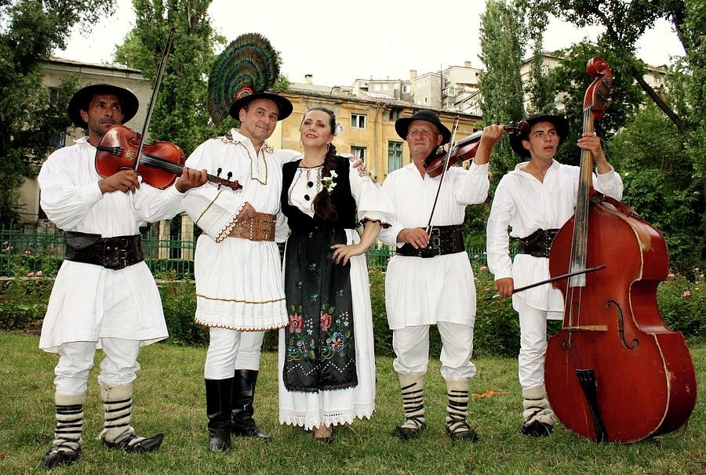
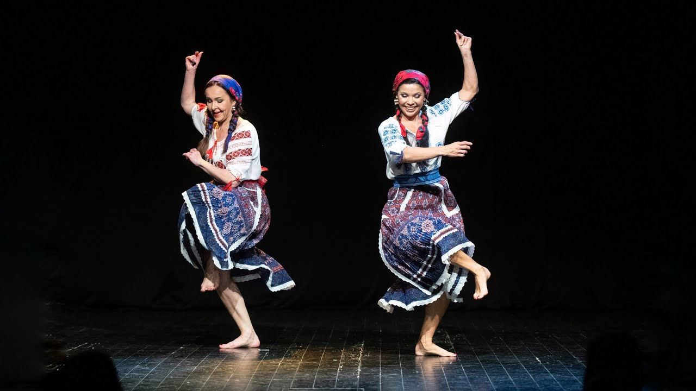

ROMANI MUSICAL HERITAGE
Romani music commonly termed as the gypsy music (which is probably considered to be an offending term), is the music of the romani people from the North- Western part of the Indian subcontinent who began moving westwards, and continued moving about thousand years ago. On comparing the Romani music, their language with other cultures, it shows Roma migrated from central India to Eastern parts of the Northern India. Roma are best known for their musical contributions, and even categorized as world music.
However, almost all Europeans in the Romani were illiterate up till the end of the nineteenth century, and hence did not have enough knowledge regarding written music. Their characteristic external culture was much more of the oral culture. All the music was passed on orally from mouth to mouth apart from writing skills, hence written music was very exceptional, and the reason for most of the variants being existed till the time. The style, tunes have been kept alive all through the ears, which is again interesting about their form. Romani people have for long been wandering entertainers and tradesmen, where they adapted enormous styles and continued to create their own. These facts are not just important from a historical perspective but also from a musical point of view. (Renard, 2011)
Seeing through few of the studies, it states that the Romani musicians have the propensity to enhance the musical styles in various ways, of which they themselves did not originally create. According to Initiative for Romani music at NYU(2012), Romanies contain a lot disparate styles of music performed, transformed, and modified which includes “flamenco, jazz Manouche, Russian “romances,” Balkan (not to mention Middle Eastern) music, Hungarian czardas, as well as fusions with jazz, hip hop, Western art music and numerous national “folk” genres.” It becomes difficult to point out a single pattern of their following as there are many differences in harmonic, melodic structure of the music differing from regions. This shows there is no universal pattern or scale that all the romani people in common follow, they do have an existence but most of them correlate to the places or region they reside, which may and may not have similarities to other romani people in other parts of the world. They too have different categories under their music depending on the occasion, such as the slow song(Romani ballads) and the dance music respectively. The only real rom music sung by them is the music played on their occasion sung in Romanes. However this can again vary based on their place of existence. Both of the classification has their own way and characteristics of singing. While singing their dance song is incredible because of the way it is performed. They use rolling techniques with syllables of no meaning while singing the melody instead of some text. Clapping and tapping feet with fingers, mouth basses, clicking of wooden spoons being the most used gestures in their dance music. The Roman music has vocals that are soulful and has minute slides between the notes that makes it oratorical. As the Roma went on moving from place to place all over the world, they kept learning various forms of music in order to find out their way of living.
These music forms became a communal therapy for the Roma people, for them being tortured, slaved, and this was not just a music for them rather most like self-identity and act as exploring the Romani diaspora. Most of the Romani music is based on the countries they settled as country based music. As per say, the Romani people of Spain significantly used the art form known as flamenco. The manele genre is practiced by the people of Romania. Tallava is one of the most typical music forms in the Roma community in Kosovo and North Macedonia.
Seeing Flamenco becomes important as it has historical ties to the Romani people. Flamenco evolves and originates from the Romani communities of South Spain but the roots are deep down connected to the middle east all the way over to India. The tradition which evolved and passed on from generations within the families of the community. As Flamenco being carried form the different parts and carrying its root form India, it carries a lot of similarities from India. There are parts of the Ragas which can be heard, the use of Indian vocalization technique, which tells the Romani people not to forget to take the roots all the way along with them. There is a great part taken from the Southern India music form known as ‘OPPARI’ which is done during times of loss and grief which is again similar to the Gypsy style of singing in Spain known as ‘CANTE JONDO’. So there’s a big fusion as Flamenco India, where there have even been shows based on Indian dance form and Flamenco which started becoming famous during the eighteenth and nineteenth centuries. One of the most found musical sounds near the former areas of Yugoslavia refers to the brass brand. These brass instruments were brought in when the Ottoman Empire occupied the parts of Yugoslavia, known as the Janissaries.(Shapiro,2002) flamenco dance
Romani music serves as an identity and musical diary for the Romani people. This is not just a music form, rather a living tradition that connects their generations and builds a strong identity for them. It can be thought of as a bridge between cultures, with melodies, emotions, moments of joy, apart from the hardships they faced throughout the years of journey of migration and adaptation, where they have their roots captured with the Indian cultures as well. The study of Romani music delves you with the understanding of their identity, with the fusion of cultural diversity, adaptability, and their tenacity towards preserving their heritage.
References:
• Gypsy Music: an overview by Michal Shapiro. (2002).• So What Is Romani Music? — Правозахисний фонд “Розвиток” | www.rozvitok.org. (2017).
• IRM@NYU. (2012). Tumblr.
• Renard, Stan, and Philip Vos Fellman. "What is Romani Music? An emerging definition learned from social network analysis."